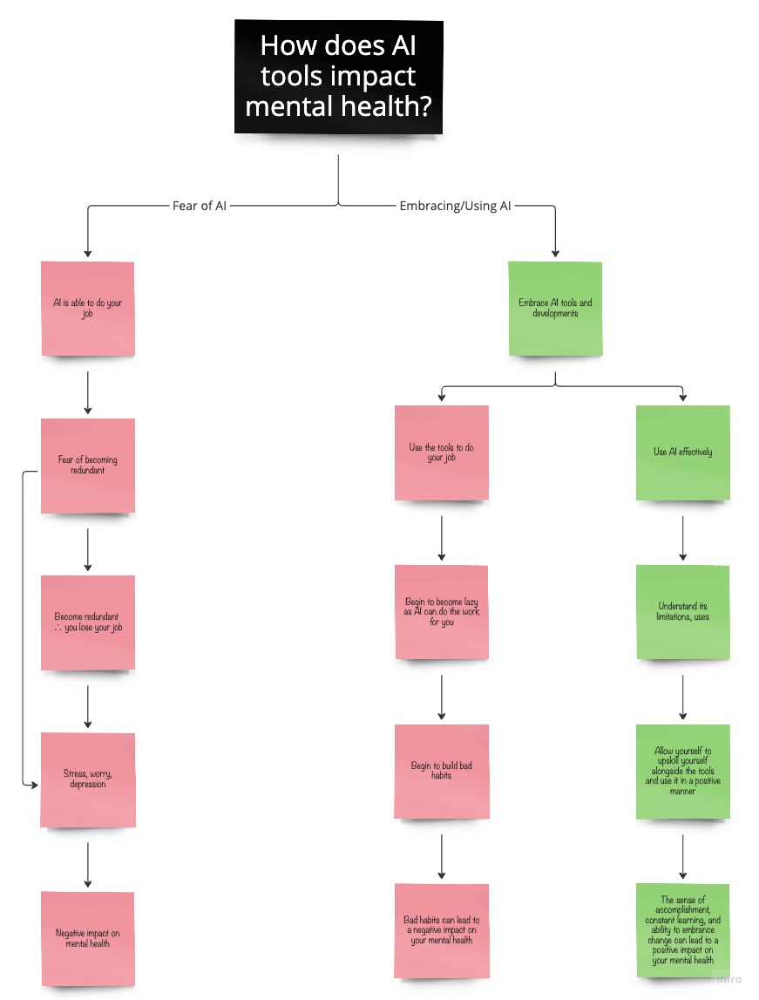

- B. Marr, "The 10 Best Examples Of How AI Is Already Used In Our Everyday Life," Forbes, 16 December 2019.
- G. D. Vynck, "ChatGPT maker OpenAI faces class action lawsuit over data to train AI - The Washington Post," The Washington Post, 28 June 2023.
- C. Mauran, "OpenAI is being sued for training ChatGPT with 'stolen' personal data | Mashable," Mashable, 29 June 2023.
- S. Ortiz, "OpenAI sued for 'stealing' data from the public to train ChatGPT | ZDNET," ZDNet, 29 June 2023.
- A. Zilber, "IBM won't fill 7,800 jobs because they could be done by AI," New York Post, 2 May 2023.

The Impact of AI on Mental Health
A Journey of Ethical and Practical Considerations
Introduction
Written: 27/07/2023
Artificial Intelligence (AI) has rapidly evolved in recent years, becoming increasingly integrated into our daily lives. From virtual assistants to predictive algorithms, AI technology continues to shape the way we interact with the world. As its influence grows, so too do the ethical and moral concerns surrounding its development and implementation. This potential impact extends beyond efficiency and convenience, touching upon profound areas such as mental health.
In 2019, Bernard Marr highlighted the pervasive use of AI in everyday life, exemplified by social media, facial recognition for unlocking devices, digital voice assistants, and more [1].
The poster child for AI applications, OpenAI's Chat GPT, raises questions about the balance between increased efficiency and the erosion of human skills. Ethical concerns regarding privacy and data usage have arisen from the process of training AI models with allegations based around the company having trained their intelligent chatbot through scraping the internet data violating the privacy and copyright of people [2] [3] [4]. However, despite these issues, AI remains an integral part of the ongoing technological revolution.
For a while, I have had a thought/proposal for some research that I have yet to find much information on and while the transformative potential of AI is not limited to its impact on industries; has anyone thought to ask the question of what AI tools such as ChatGPT and Midjourney can do to one’s mental health. As AI adoption grows, it can either contribute to stress and job insecurity or empower individuals to embrace change, upskill, and optimize their work. The effects on mental health, both positive and negative, depend on the individuals' attitudes and interactions with AI.
Here is my thought process behind my base for my research:

Beginning on the left, we start with the fear of AI. A person sees that AI is able to do their job. This person now begins to worry that their company may view them as redundant. Ultimately, the company decides to embrace AI and this person now becomes redundant and they lose their job. This leads to stress, worry, and ultimately depression, which is negative on their mental health. Similarly, the stress alone of becoming redundant, whether a possibility or not, could have an impact on one’s mental health. Now, this premise does seem fairly similar to previous industrial revolutions, where the use of machines and robotics began to replace people in factories. And it seems as history may repeat itself as IBM has said that they would likely be pausing their hiring for approximately 8,000 jobs as these positions could potentially be performed by AI within the next few years [5].
Now on the other side, we look at those embracing and using AI. However, there are two sides to this that I theorise. The first looks at a person using AI to do their job. Not worrying about how the AI is doing it, whether the tool is adhering to privacy policies, or how the tool will be using the data and storing it. This person using the AI to do their job now builds the habit of constantly letting the tool do its job taking the results at face value, making them lazy. This type of laziness and lack of care in their work can begin to build bad habits, forming comfort bubbles and areas of little to no mental growth. These bad habits can ultimately lead to having a negative impact on your mental health.
Similarly, if we look at the person who uses AI effectively. Understanding its limitations and way data is used, they can upskill themselves alongside the tools and use it in a positive manner. For example, using AI to break down complex areas that a person may be working on to assist in understanding the sector they are working in, or doing a quick research to get the basic facts before embarking on a deeper dive into research and focusing on the critical points. Knowing that AI tools are not 100% correct and how it uses the data to train itself can allow the person to use it effectively, to help optimize their way of working rather than completely doing it for them. This sense of accomplishment, constant learning, and ability to embrace change can lead to a positive impact on one’s mental health.
AI's influence on mental health is a nuanced topic that requires careful examination. As AI becomes increasingly prevalent, its impact on mental well-being becomes ever more pronounced. The ethical and practical implications of AI's integration into society must be explored, and their effects on mental health must be considered. Understanding how individuals respond to and interact with AI will help us identify strategies for promoting positive mental health outcomes in the age of artificial intelligence.
Now I reiterate the point that the above is my theory, and in the foreseen future, I will be doing my best to treat this as a dissertation/research piece that could hopefully be used as such. But ultimately, I want to explore this avenue, engaging with professionals around the world, using my skills as a researcher, strategist, and more importantly data analyst to understand and present what I hope would be some key insights that can be used in the future. Whether something comes of this or not, I do not know. But research is fun, and so is exploring the avenues less traveled.
As a starting point, my next piece will be on Cyberpsychology and mental health. Defining it, unpacking it and seeing how it can contribute to my theory and or research.